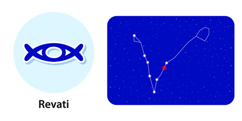

Nakshatra Revati
Revati Nakshatra
Characteristics male
The native of the Revati Nakshatra is pure-hearted, soft-spoken and sincere in his dealings, both in his personal and professional lives. Also, he knows the right thing to say at the right time, so he is unlikely to ever hurt anyone with his words or deeds. Because he leads an independent life, he can easily get hurt if someone tries to control his freedom. Though he does not trust anyone blindly, once he has given them his trust after great deliberation, he tends to get attached to those people. This native is very ambitious, and even a slight setback can make him depressed.Profession male
The male native of the Revati Nakshatra is likely to jump at any opportunity to do any work, irrespective of whether he is capable of handling it or not. This generally leads to failure and disappointment. If he pauses for a moment and things hard upon the work he would like to do and then take up that work, no power in the world can stop him from achieving greatness in his chosen field. He also has a strong will-power and overcomes difficult obstacles to reach his goals. The native will be of a scientific bent of mind, will be interested in doing historical research, especially in cultures, including astrology and astronomy. His rewards are unlikely to be in proportion with his hard-work till the age of 50, after which he can expect to lead a stable and comfortable life.Compatibility male
The native of the Revati Nakshatra, it has been observed, cannot expect to gain any benefits from his relatives, including his father and other family members. But, he will enjoy his conjugal life and his rapport with his wife will be quite good, as she will be of a flexible nature.Health male
The health of the male native of the Revati Nakshatra may not be too good, as he will keep getting fever, dysentery or face problems related to his teeth and gums. Stomach ulcers and ear problems may also cause concern.Characteristics female
The lady born in Revati Nakshatra is headstrong, and is prone to dominating others, both at home and in her profession. However, she is god-fearing, superstitious, and observes all religious practices and rituals.Profession female
The female native of the Revati Nakshatra is likely to be educated in the fine arts or mathematics. As a professional, she may end up as a telephone operator, teacher or a public relations officer. If the good and powerful planets shower their blessings on her she may even end up as a high-level diplomat in politics.Compatibility female
The female native of the Revati Nakshatra will enjoy a very smooth and harmonious married life, enjoying all the carnal pleasures and material comforts provided by her doting husband. There may sometimes be minor tiffs with in-laws but they will soon be sorted out.Health female
The health of this native may be problematic sometimes. She is likely to have ailments in the stomach, feet, and ears.Revati Nakshatra Padas
1st Pada: The first pada of the Revati Nakshatra falls in the Sagittarius sun sign Navamsa ruled by Jupiter. Here the focus of the natives is on being casual and generous. These natives will be very optimistic.
2nd Pada: The second pada of the Revati Nakshatra falls in the Capricorn Navamsa ruled by Saturn. Here the focus of the native is on being well-organized, and sticking to the tried and tested path, without taking any risks.
3rd Pada: The third pada of the Revati Nakshatra falls in the Aquarius Navamsa ruled by Saturn. Here the focus is on being compassionate and sensitive to the pains of others, and do everything to help them.
4th Pada: The fourth pada of the Revati Nakshatra falls in the Pisces Navamsa ruled by Jupiter. Here the native is prone to dreaming and building castles in the air. The native here is also easily influenced.
Features of Revati Nakshatra
Symbol- Drum for keeping timeRuling planet- Mercury
Gender- Female
Gana- Deva
Guna- sattva/sattva/sattva
Presiding Deity- Pushan
Animal- A Female Elephant
Indian Zodiac- 16°40′ – 30° Meena